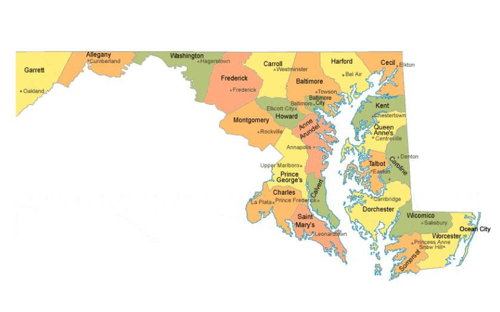
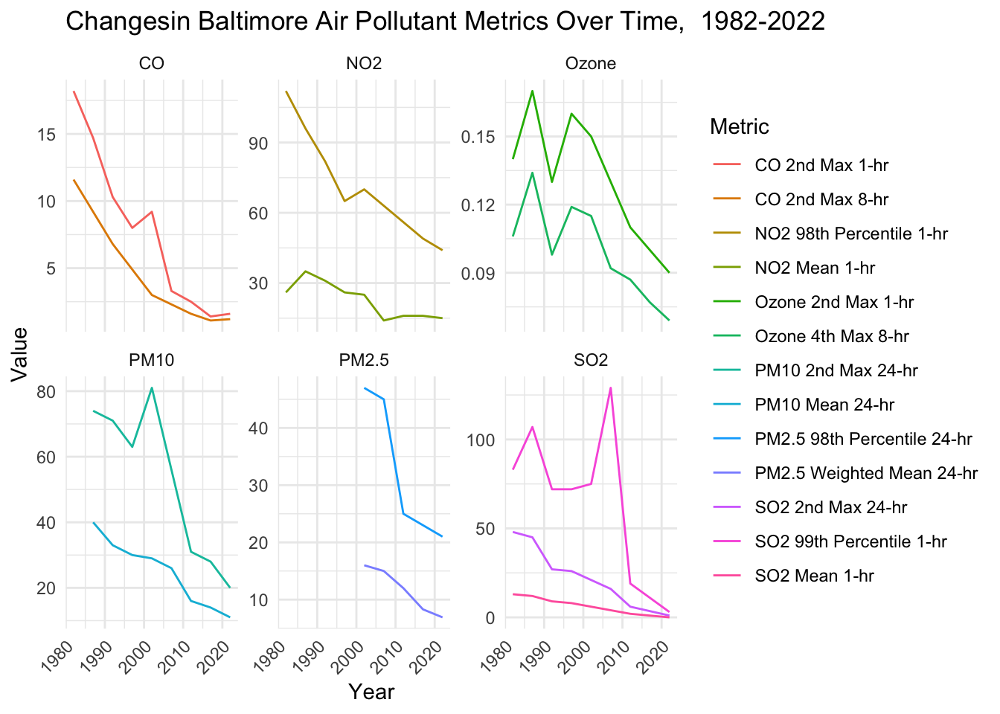
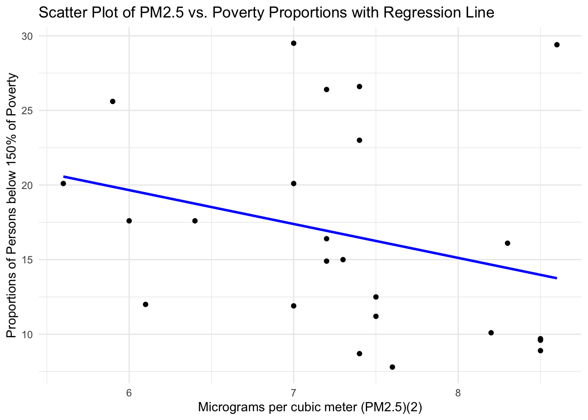
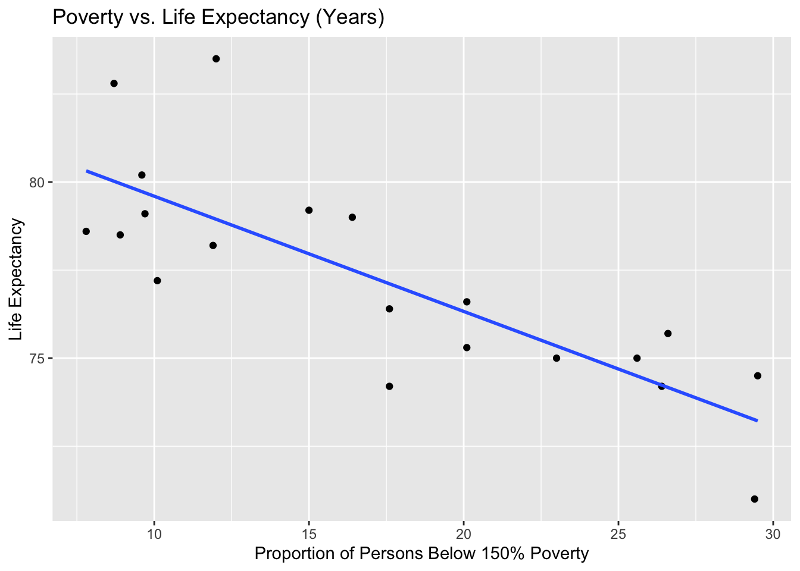
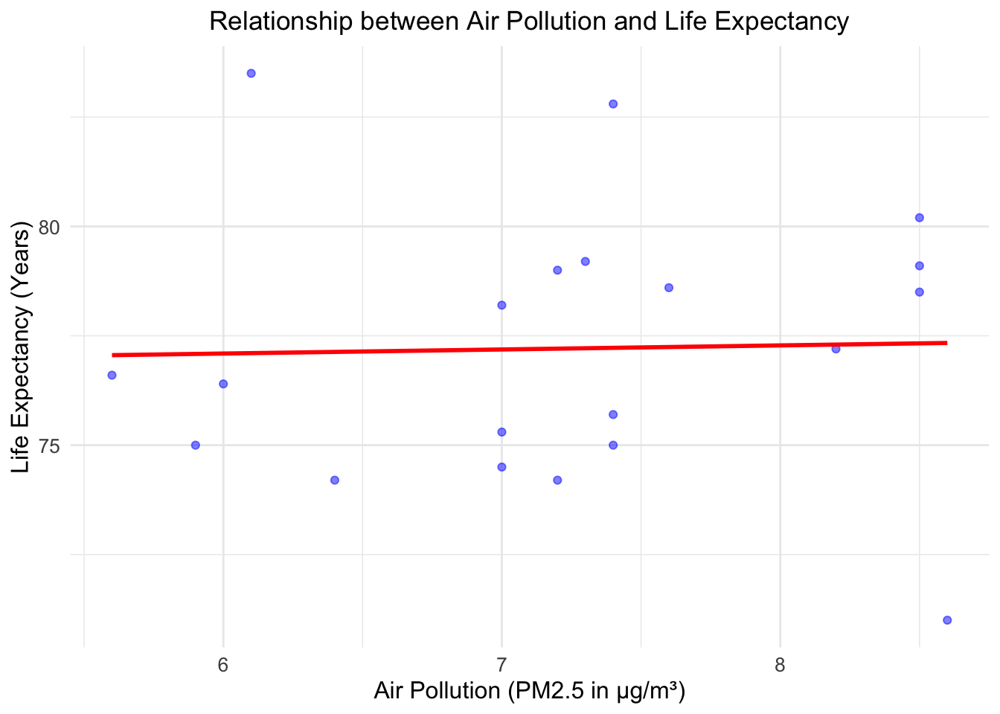

In this data analysis, I aimed to investigate the relationship between air pollution, health, and poverty in Maryland. I did this using publicly available data from the Environmental Protection Agency and the National Institute on Minority Health and Health Disparities. The code, data analysis, and results are shown below.
The intended audience for this analysis would be public health policymakers seeking to understand how current trends in air pollution in Maryland impact human health in the past, present and future.

::: {.callout-tip collapse = “true”} ## Sources and Data Dictionaries
In this section, I created visuals to show how levels of air pollutants have been falling in Baltimore across the last 40 years. This can likely be attributed to state- and federal-level interventions aiming to address the climate crisis. One example would be the Maryland Healthy Air Act of 2001 ((Maryland Department of the Environment, 2023)). Here, I used data from Baltimore. As the largest city in Maryland, one would expect changes to pollution regulations to have the largest effects here. In the subsequent parts of this analysis, I consider the effects that these changes (many of which are recent) can be expected to have on people’s health.
library(tidyverse)
── Attaching core tidyverse packages ──────────────────────── tidyverse 2.0.0 ──
✔ dplyr 1.1.4 ✔ readr 2.1.5
✔ forcats 1.0.0 ✔ stringr 1.5.1
✔ ggplot2 3.5.1 ✔ tibble 3.2.1
✔ lubridate 1.9.3 ✔ tidyr 1.3.1
✔ purrr 1.0.2
── Conflicts ────────────────────────────────────────── tidyverse_conflicts() ──
✖ dplyr::filter() masks stats::filter()
✖ dplyr::lag() masks stats::lag()
ℹ Use the conflicted package (<http://conflicted.r-lib.org/>) to force all conflicts to become errors
clean_data <-function(data, year) { #cleaning the data by dealing with the different labelling of NA values ("NA" for some categories and "." for others ) data %>%mutate(year = {{year}},across(where(is.character), ~ifelse(. ==".", NA, .) ),across(matches("PM10.2nd.Max.24.hr|PM10.Mean.24.hr|PM2.5.98th.Percentile.24.hr|PM2.5.Weighted.Mean.24.hr|CO.2nd.Max.1.hr|CO.2nd.Max.8.hr|NO2.98th.Percentile.1.hr|NO2.Mean.1.hr|Ozone.2nd.Max.1.hr|Ozone.4th.Max.8.hr|SO2.99th.Percentile.1.hr|SO2.2nd.Max.24.hr|SO2.Mean.1.hr|Lead.Max.3.Mo.Avg"),~as.numeric(.) ) )}b_data_1982 <-clean_data(read_csv("/Users/rosiequint/Desktop/ScM Biostats/140.777 Stat Programming/Project1/conreport1982.csv", show_col_types =FALSE), 1982)b_data_1987 <-clean_data(read_csv("/Users/rosiequint/Desktop/ScM Biostats/140.777 Stat Programming/Project1/conreport1987.csv", show_col_types =FALSE), 1987)b_data_1992 <-clean_data(read_csv("/Users/rosiequint/Desktop/ScM Biostats/140.777 Stat Programming/Project1/conreport1992.csv", show_col_types =FALSE), 1992)b_data_1997 <-clean_data(read_csv("/Users/rosiequint/Desktop/ScM Biostats/140.777 Stat Programming/Project1/conreport1997.csv", show_col_types =FALSE), 1997)b_data_2002 <-clean_data(read_csv("/Users/rosiequint/Desktop/ScM Biostats/140.777 Stat Programming/Project1/conreport2002.csv", show_col_types =FALSE), 2002)b_data_2007 <-clean_data(read_csv("/Users/rosiequint/Desktop/ScM Biostats/140.777 Stat Programming/Project1/conreport2007.csv", show_col_types =FALSE), 2007)b_data_2012 <-clean_data(read_csv("/Users/rosiequint/Desktop/ScM Biostats/140.777 Stat Programming/Project1/conreport2012.csv", show_col_types =FALSE), 2012)b_data_2017 <-clean_data(read_csv("/Users/rosiequint/Desktop/ScM Biostats/140.777 Stat Programming/Project1/conreport2017.csv", show_col_types =FALSE), 2017)b_data_2022 <-clean_data(read_csv("/Users/rosiequint/Desktop/ScM Biostats/140.777 Stat Programming/Project1/conreport2022.csv", show_col_types =FALSE), 2022)
#Creating a single data frame for air quality by yearbaltimore_air_quality <-bind_rows(b_data_1982, b_data_1987, b_data_1992, b_data_1997, b_data_2002, b_data_2007, b_data_2012, b_data_2017, b_data_2022) %>%select(-`Lead Max 3-Mo Avg`, -`CBSA Code`, -CBSA) #get rid because no data for any yearsprint(baltimore_air_quality)
# A tibble: 9 × 14
`CO 2nd Max 1-hr` `CO 2nd Max 8-hr` `NO2 98th Percentile 1-hr` `NO2 Mean 1-hr`
<dbl> <dbl> <dbl> <dbl>
1 18.2 11.6 112 26
2 14.7 9.2 96 35
3 10.3 6.8 82 31
4 8 4.9 65 26
5 9.2 3 70 25
6 3.3 2.3 NA 14
7 2.5 1.6 56 16
8 1.4 1.1 49 16
9 1.6 1.2 44 15
# ℹ 10 more variables: `Ozone 2nd Max 1-hr` <dbl>, `Ozone 4th Max 8-hr` <dbl>,
# `SO2 99th Percentile 1-hr` <dbl>, `SO2 2nd Max 24-hr` <dbl>,
# `SO2 Mean 1-hr` <dbl>, `PM2.5 98th Percentile 24-hr` <dbl>,
# `PM2.5 Weighted Mean 24-hr` <dbl>, `PM10 2nd Max 24-hr` <dbl>,
# `PM10 Mean 24-hr` <dbl>, year <dbl>
# Create a new variable 'Pollutant' to distinguish between pollutantsbaltimore_air_quality <- baltimore_air_quality %>%select(year, contains("CO"), contains("NO2"), contains("Ozone"), contains("SO2"), contains("PM2.5"), contains("PM10")) %>%pivot_longer(cols =-year,names_to ="Metric",values_to ="Value" ) %>%mutate(Pollutant =case_when(str_detect(Metric, "CO") ~"CO",str_detect(Metric, "NO2") ~"NO2",str_detect(Metric, "Ozone") ~"Ozone", # Use 'Ozone' instead of 'O3'str_detect(Metric, "SO2") ~"SO2",str_detect(Metric, "PM2.5") ~"PM2.5",str_detect(Metric, "PM10") ~"PM10",TRUE~"Other" ) )
Plot 1: Baltimore air pollution over time, grouped by pollutant type
Here I created a plot for air pollution in Baltimore over time, grouped by pollutant type.
14 variables were measured in total. One was removed (Lead Max 3-Mo. Avg) as there were no observations for any of the years studied. For the plot, I decided to group data by pollutant (e.g. showing both measurements for NO2 (98th percentile and mean) and plot onto the same graph.
baltimore_air_quality %>%drop_na(Value) %>%ggplot(aes(x = year, y = Value, color = Metric)) +geom_line() +facet_wrap(~ Pollutant, scales ="free_y") +labs(title ="Changesin Baltimore Air Pollutant Metrics Over Time, 1982-2022",x ="Year",y ="Value" ) +theme_minimal() +theme(axis.text.x =element_text(angle =45, hjust =1))

Part 2: Investigating the relationship between PM2.5 and poverty rates by Maryland County.
To further explore the relationship between air quality regulation and human health in Maryland, I investigated the relationship between poverty and air pollution by county. I compared county-level data on mean PM2.5 concentration with the proportion living in poverty in each county.I chose to investigate PM2.5 specifically as it is believed to be the most harmful to human health, which was a central topic of my investigation ((World Health Organization, 2023)). I joined the data from two datasets by county, resulting in county-level data on Micrograms per cubic meter of PM2.5 and Proportions of Persons below 150% of Poverty, with both datasets from 2023.
poverty_county_data <-read_csv("/Users/rosiequint/Desktop/ScM Biostats/140.777 Stat Programming/Project1/poverty_county_data.csv", skip =4, na =c("", "NA"))
Warning: One or more parsing issues, call `problems()` on your data frame for details,
e.g.:
dat <- vroom(...)
problems(dat)
Rows: 31 Columns: 5
── Column specification ────────────────────────────────────────────────────────
Delimiter: ","
chr (3): County, FIPS, Rank within US (of 3143 counties)
dbl (2): Value (Percent), People (<150% Of Poverty)
ℹ Use `spec()` to retrieve the full column specification for this data.
ℹ Specify the column types or set `show_col_types = FALSE` to quiet this message.
pm25_county_data <-read_csv("/Users/rosiequint/Desktop/ScM Biostats/140.777 Stat Programming/Project1/pm2.5_county_data.csv", skip =5, na =c("", "NA"))
Warning: One or more parsing issues, call `problems()` on your data frame for details,
e.g.:
dat <- vroom(...)
problems(dat)
Rows: 3151 Columns: 3
── Column specification ────────────────────────────────────────────────────────
Delimiter: ","
chr (2): County, FIPS
dbl (1): Micrograms per cubic meter (PM2.5)(2)
ℹ Use `spec()` to retrieve the full column specification for this data.
ℹ Specify the column types or set `show_col_types = FALSE` to quiet this message.
pm25_county_data <- pm25_county_data %>%separate(col = County, into =c("County", "State"), sep =", ") %>%filter(State =="Maryland") %>%mutate(County =str_replace(County, " County$", ""))
combined_pollution_poverty_data <- poverty_county_data %>%inner_join(pm25_county_data, by ="FIPS") %>%select(County.x, `Value (Percent)`, `Micrograms per cubic meter (PM2.5)(2)`) %>%rename(`County`= County.x,`Proportions of Persons below 150% of Poverty`=`Value (Percent)` )
Plot 2: Air pollution (mean PM2.5 concentration) and poverty by Maryland county
Here I generated a scatter plot showing the relationship between poverty (measured as the proportion of persons below 150% of the poverty threshold) and air pollution (measured as micrograms of PM2.5 per cubic metre) by Maryland County. I included a regression line which shows a negative correlation (i.e. counties with higher levels of air pollutants having lower rates of poverty). This came as a surprise given the commonly-described association between poverty and poor health (for which air pollution is a known risk factor). However, this could be explained by area-level features such as wealthier counties tending to be more urban and thus have higher levels of pollutants, while poorer counties are more rural. Further research and perhaps an ecological study could help to establish whether this is the case here.
library(ggplot2)ggplot(combined_pollution_poverty_data, aes(x =`Micrograms per cubic meter (PM2.5)(2)`, y =`Proportions of Persons below 150% of Poverty`)) +geom_point() +# Scatter plotgeom_smooth(method ="lm", se =FALSE, color ="blue") +# Linear regression linelabs(title ="Scatter Plot of PM2.5 vs. Poverty Proportions with Regression Line",x ="Micrograms per cubic meter (PM2.5)(2)",y ="Proportions of Persons below 150% of Poverty" ) +theme_minimal()
`geom_smooth()` using formula = 'y ~ x'

Part 3: Relationship between air pollution, poverty, and life expectancy at a county level in Maryland
Here I created a combined dataset containing air pollution, life expectancy and poverty data for all counties in Maryland.
lifeexp_county_data <-read_csv("/Users/rosiequint/Desktop/ScM Biostats/140.777 Stat Programming/Project1/lifeexp_county_data.csv")
Rows: 1025 Columns: 5
── Column specification ────────────────────────────────────────────────────────
Delimiter: ","
chr (4): Jurisdiction, Race/ ethnicity, Year, Measure
dbl (1): Value
ℹ Use `spec()` to retrieve the full column specification for this data.
ℹ Specify the column types or set `show_col_types = FALSE` to quiet this message.
# A tibble: 6 × 4
County Proportions of Perso…¹ Micrograms per cubic…² `Life Expectancy`
<chr> <dbl> <dbl> <dbl>
1 Somerset 29.5 7 74.5
2 Baltimore City 29.4 8.6 71
3 Caroline 26.6 7.4 75.7
4 Allegany 26.4 7.2 74.2
5 Dorchester 25.6 5.9 75
6 Wicomico 23 7.4 75
# ℹ abbreviated names: ¹`Proportions of Persons below 150% of Poverty`,
# ²`Micrograms per cubic meter (PM2.5)(2)`
Plots 3 and 4: Scatter plots of poverty vs life expectancy and air pollution vs life expectancy
I additionally created scatter plots showing the relationship between poverty and life expectancy, and air pollution and life expectancy across Maryland counties. As would be expected, proportion in poverty and life expectancy have a strong inverse association. Furthermore, pollution appears to have no association with life expectancy. This echoes the previous finding that poverty and pollution did not have a clear association, and is also surprising as we would expect air pollution to have a negative impact on a person’s health. Again, controlling for a greater number of area-level factors may reveal a different story.
ggplot(combined_full_data, aes(x =`Proportions of Persons below 150% of Poverty`, y =`Life Expectancy`)) +geom_point() +geom_smooth(method ="lm", se =FALSE) +labs(title ="Poverty vs. Life Expectancy (Years)", x ="Proportion of Persons Below 150% Poverty", y ="Life Expectancy")
`geom_smooth()` using formula = 'y ~ x'

ggplot(combined_full_data, aes(x =`Micrograms per cubic meter (PM2.5)(2)`, y =`Life Expectancy`)) +geom_point(color ="blue", alpha =0.5) +# Scatter plot with transparencygeom_smooth(method ="lm", se =FALSE, color ="red") +# Linear regression linelabs(title ="Relationship between Air Pollution and Life Expectancy",x ="Air Pollution (PM2.5 in µg/m³)",y ="Life Expectancy (Years)" ) +theme_minimal() +# Minimal theme for claritytheme(plot.title =element_text(hjust =0.5), # Center the titleaxis.title =element_text(size =12),axis.text =element_text(size =10) )
`geom_smooth()` using formula = 'y ~ x'

Model 1: Regressing life expectancy on air pollution and poverty measures
Here I developed and tested three regression models for predicting life expectancy using air pollution and/or poverty data. Inspecting all of these models reinforces the trends shown by the scatter plots, with the best model appearing to be that which includes only poverty as a predictor for life expectancy. Adding air quality to this model (as in lm_full_model) as it increases the p-value and lowers the F-statistic. Therefore, all we can conclude from this data is that poverty rates in Maryland’s counties is a good predictor for their life expectancy (an already well-established relationship).
lm_pollution_poverty <-lm(`Proportions of Persons below 150% of Poverty`~`Micrograms per cubic meter (PM2.5)(2)`, data = combined_full_data)summary(lm_pollution_poverty)
Call:
lm(formula = `Proportions of Persons below 150% of Poverty` ~
`Micrograms per cubic meter (PM2.5)(2)`, data = combined_full_data)
Residuals:
Min 1Q Median 3Q Max
-8.692 -5.178 -1.875 5.485 15.151
Coefficients:
Estimate Std. Error t value Pr(>|t|)
(Intercept) 33.543 13.399 2.503 0.0222 *
`Micrograms per cubic meter (PM2.5)(2)` -2.244 1.837 -1.221 0.2377
---
Signif. codes: 0 '***' 0.001 '**' 0.01 '*' 0.05 '.' 0.1 ' ' 1
Residual standard error: 7.335 on 18 degrees of freedom
Multiple R-squared: 0.07654, Adjusted R-squared: 0.02524
F-statistic: 1.492 on 1 and 18 DF, p-value: 0.2377
lm_life_exp_poverty <-lm(`Life Expectancy`~`Proportions of Persons below 150% of Poverty`, data = combined_full_data)summary(lm_life_exp_poverty)
Call:
lm(formula = `Life Expectancy` ~ `Proportions of Persons below 150% of Poverty`,
data = combined_full_data)
Residuals:
Min 1Q Median 3Q Max
-2.9119 -1.1100 -0.1893 1.2484 4.5563
Coefficients:
Estimate Std. Error t value
(Intercept) 82.86912 1.08848 76.133
`Proportions of Persons below 150% of Poverty` -0.32712 0.05804 -5.636
Pr(>|t|)
(Intercept) < 2e-16 ***
`Proportions of Persons below 150% of Poverty` 2.39e-05 ***
---
Signif. codes: 0 '***' 0.001 '**' 0.01 '*' 0.05 '.' 0.1 ' ' 1
Residual standard error: 1.88 on 18 degrees of freedom
Multiple R-squared: 0.6383, Adjusted R-squared: 0.6182
F-statistic: 31.77 on 1 and 18 DF, p-value: 2.394e-05
lm_life_exp_pollution <-lm(`Life Expectancy`~`Micrograms per cubic meter (PM2.5)(2)`, data = combined_full_data)summary(lm_life_exp_pollution)
Call:
lm(formula = `Life Expectancy` ~ `Micrograms per cubic meter (PM2.5)(2)`,
data = combined_full_data)
Residuals:
Min 1Q Median 3Q Max
-6.3364 -2.1203 -0.2784 1.7781 6.3959
Coefficients:
Estimate Std. Error t value Pr(>|t|)
(Intercept) 76.53721 5.70675 13.412 8.26e-11
`Micrograms per cubic meter (PM2.5)(2)` 0.09293 0.78230 0.119 0.907
(Intercept) ***
`Micrograms per cubic meter (PM2.5)(2)`
---
Signif. codes: 0 '***' 0.001 '**' 0.01 '*' 0.05 '.' 0.1 ' ' 1
Residual standard error: 3.124 on 18 degrees of freedom
Multiple R-squared: 0.0007833, Adjusted R-squared: -0.05473
F-statistic: 0.01411 on 1 and 18 DF, p-value: 0.9068
lm_full_model <-lm(`Life Expectancy`~`Micrograms per cubic meter (PM2.5)(2)`+`Proportions of Persons below 150% of Poverty`, data = combined_full_data)summary(lm_full_model)
Call:
lm(formula = `Life Expectancy` ~ `Micrograms per cubic meter (PM2.5)(2)` +
`Proportions of Persons below 150% of Poverty`, data = combined_full_data)
Residuals:
Min 1Q Median 3Q Max
-3.4878 -1.0768 -0.1639 1.2694 3.6395
Coefficients:
Estimate Std. Error t value
(Intercept) 88.30404 3.86648 22.838
`Micrograms per cubic meter (PM2.5)(2)` -0.69410 0.47503 -1.461
`Proportions of Persons below 150% of Poverty` -0.35080 0.05858 -5.989
Pr(>|t|)
(Intercept) 3.39e-14 ***
`Micrograms per cubic meter (PM2.5)(2)` 0.162
`Proportions of Persons below 150% of Poverty` 1.47e-05 ***
---
Signif. codes: 0 '***' 0.001 '**' 0.01 '*' 0.05 '.' 0.1 ' ' 1
Residual standard error: 1.823 on 17 degrees of freedom
Multiple R-squared: 0.6787, Adjusted R-squared: 0.6409
F-statistic: 17.95 on 2 and 17 DF, p-value: 6.443e-05
Results and analysis
First, I briefly explored how air pollution has changed over time in Baltimore City, and found that all of the measured pollutants had decreased in mean concentration over the past 40 years (data from 1982-2022).
I then investigated the relationship between proportion of people in poverty and air pollution (measured by PM2.5 concentration) by county in Maryland, to determine whether there was an association between the two. A scatter plot showed that there appeared to be a slight negative relationship between the two.
Finally, I performed regression analysis to determine whether air pollution could be a good predictor of life expectancy in Maryland’s counties. I regressed life expectancy on air pollution and found the model was not a good fit. I then regressed it on poverty as a comparator, as poverty has a known strong association with life expectancy, and found a well-fitting model, as would be expected. I also found that adding air pollution to the regression model did not improve it.
My main finding from this project was that air pollution at a county-level is a fairly poor predictor of both poverty and life expectancy. Anecdotally, I would assume that higher levels of air pollution causes poor health, so I would be inclined to perform follow-up research. However, this apparent lack of correlation could also be simply due to the complexity of measuring health, a lack of data on possible confounders, or simply poor data quality. The data used for this analysis may be limited by its different sources (who may use more or less up-to-date measurements) or its summary nature (offering only one yearly statistic for each county).
Functions used:
From dplyr filter() select() mutate() rename() inner_join() summarize() group_by() arrange() From ggplot2 ggplot() aes() geom_line() geom_point() geom_smooth() facet_wrap() labs() theme() theme_minimal() scale_color_manual() From tidyr pivot_longer() separate()